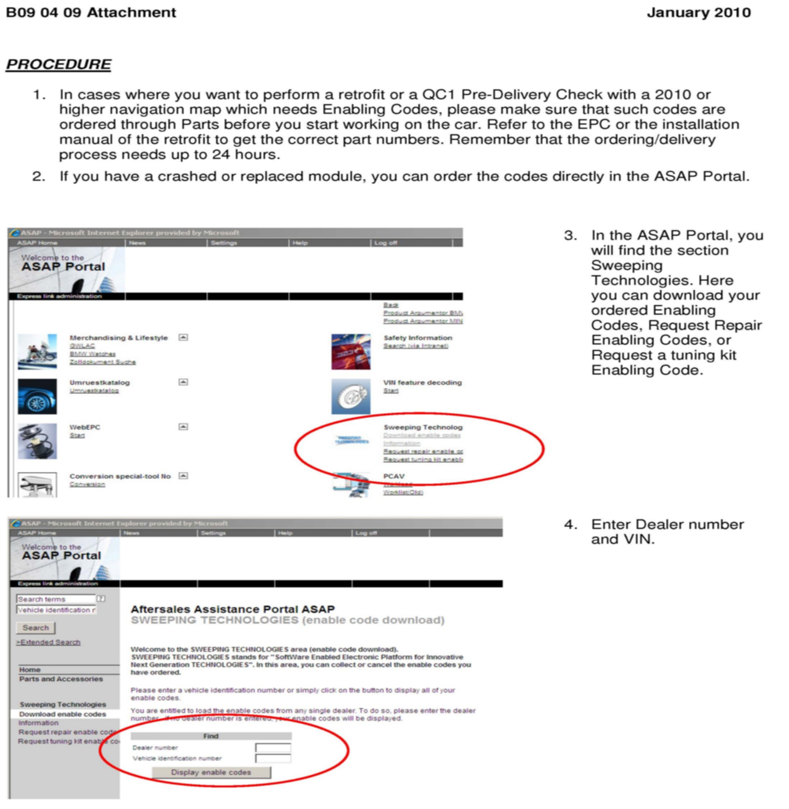
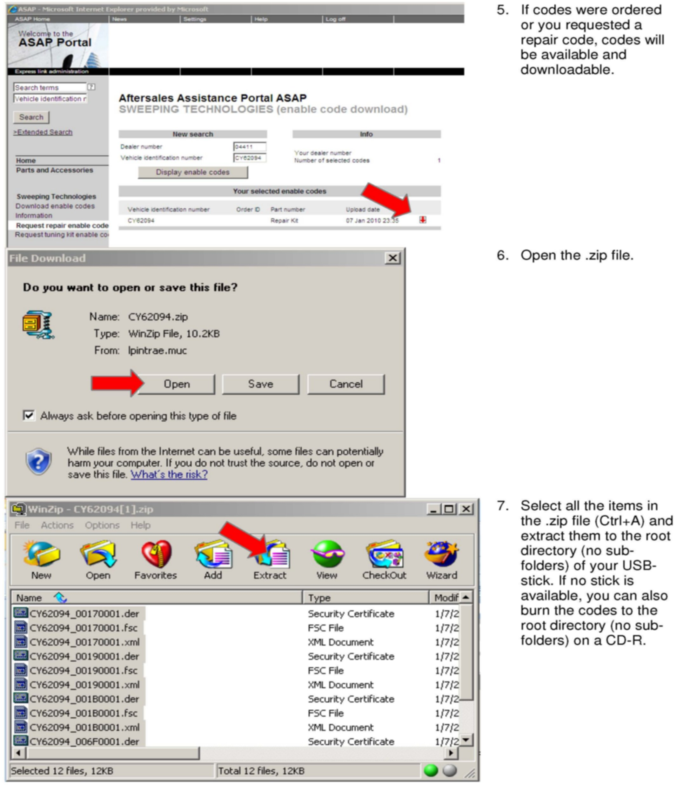
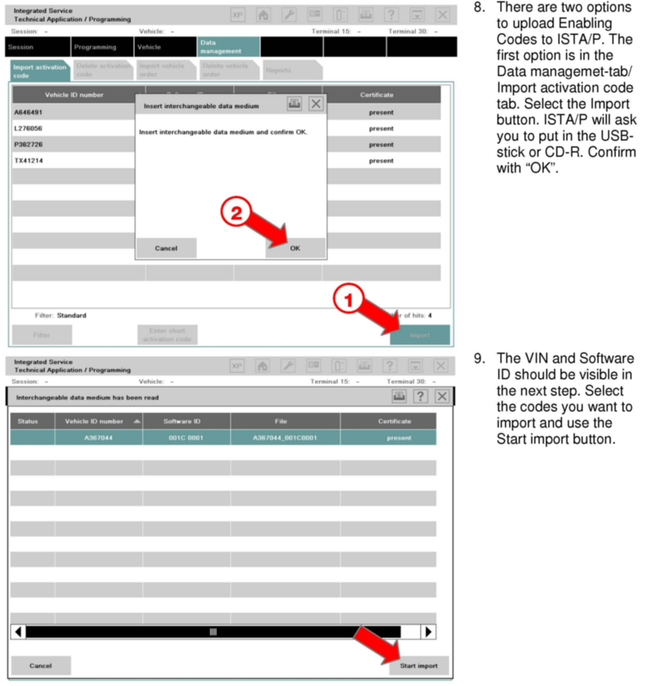
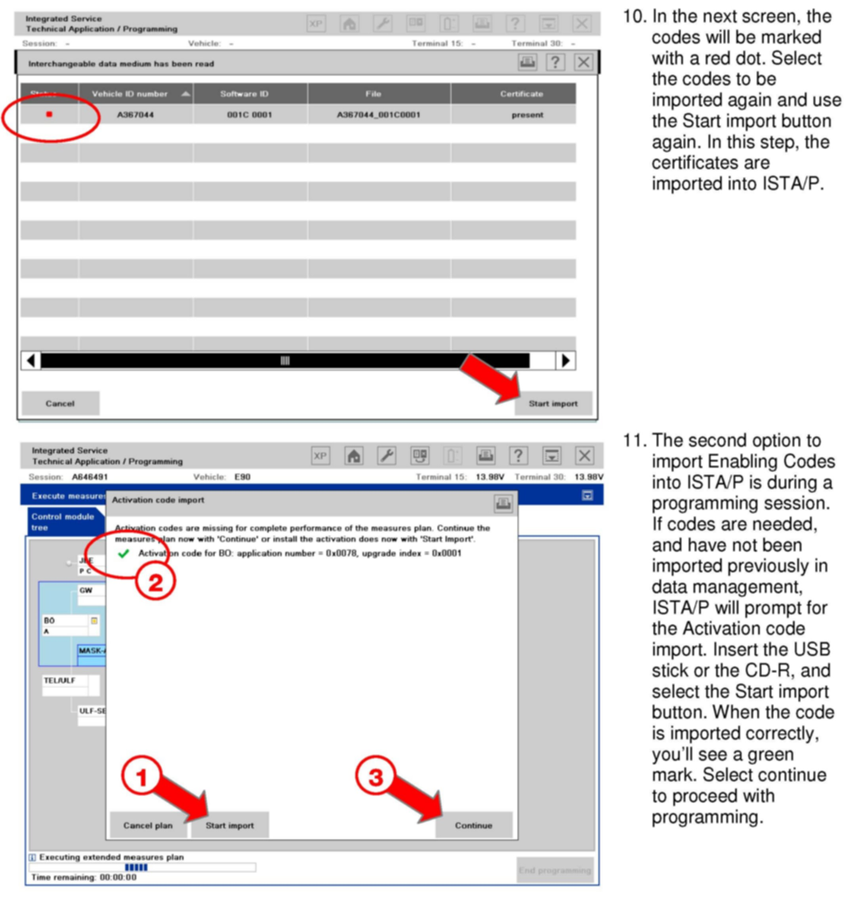
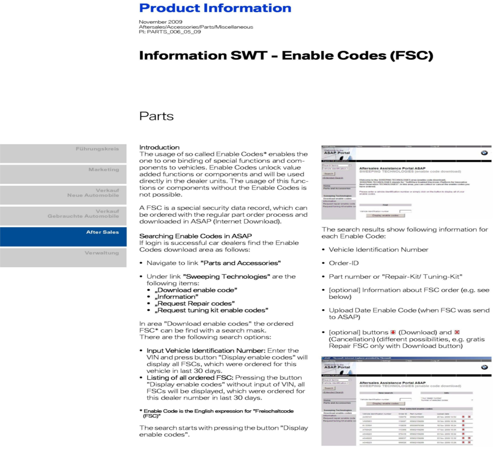
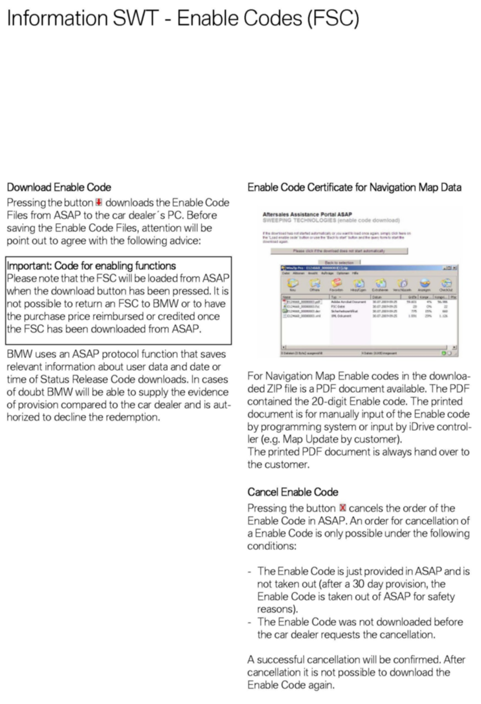
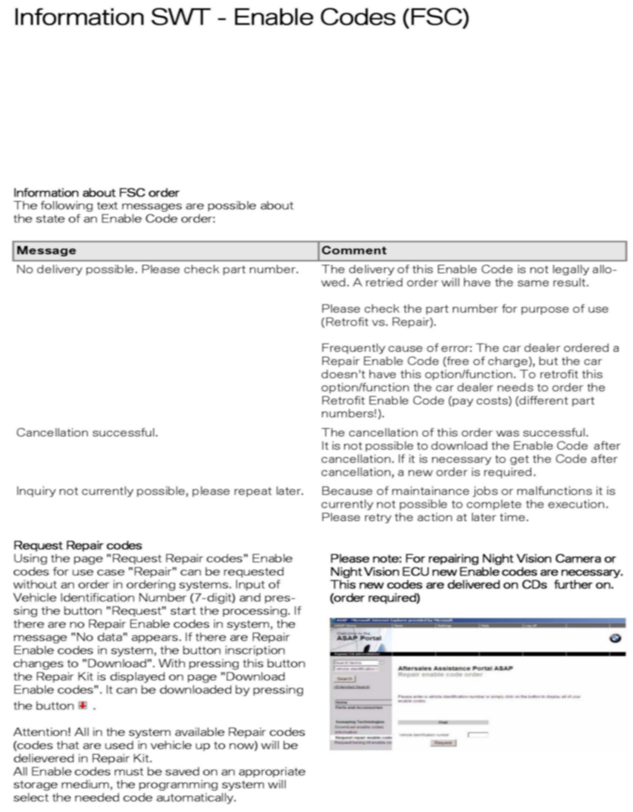
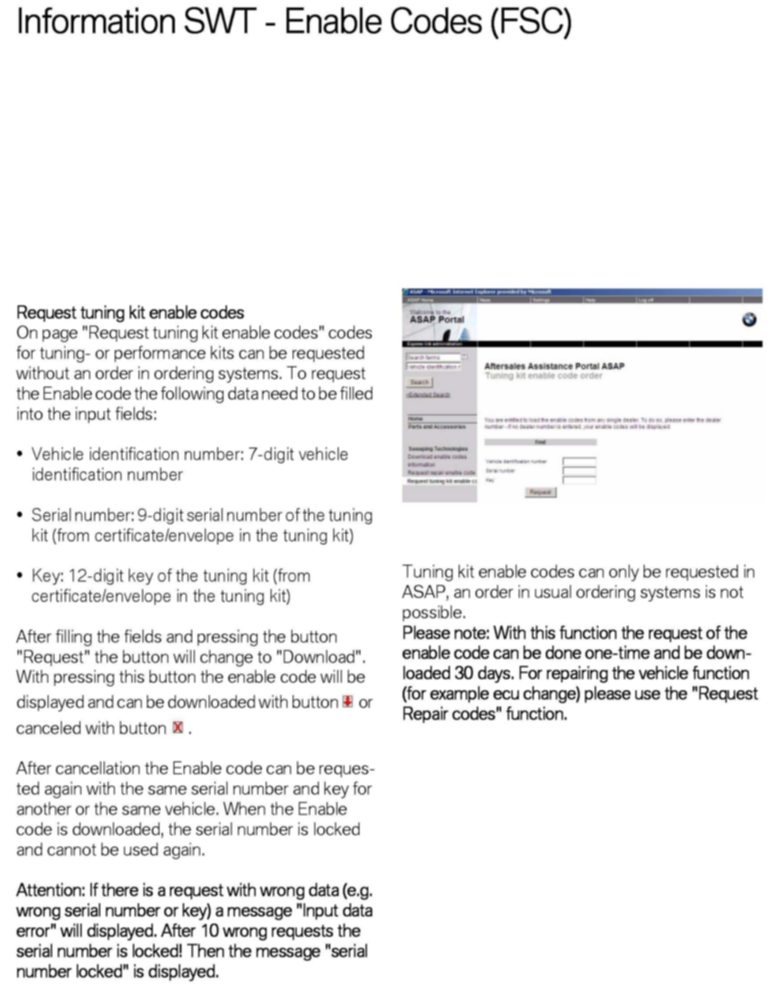

Computers/Control - Loading/Activation Of Enabling Codes
SI B 09 04 09Programming/Coding Explanations
May 2010
Technical Service
This Service Information bulletin supersedes SI B09 04 09 dated April 2010.
[NEW] designates changes to this revision
SUBJECT
Enabling Codes
MODEL
All
SITUATION
Enabling Codes are needed for certain module replacements, retrofits, crashed modules or during the QC1 Pre-Delivery Check. This bulletin gives a general overview of Enabling Codes, which parts are affected, and how to load and activate Enabling Codes.
WHAT ARE FSC ENABLING CODES?
The abbreviation FSC stands for Freischaltcode, which is the German translation for Enabling Code. These codes are used to enable hardware or software in our vehicles to protect unauthorized access to various vehicle functions. These codes are ordered via the EPC and delivered through the Sweeping Technology system, SWT.
WHY DO WE NEED ENABLING CODES?
Hardware activation:
With the introduction of the Night Vision System in March 2006, Enabling Codes were first used in a BMW vehicle to activate the components (Camera and control module) in the vehicle. These codes are the result of a legal requirement, because of strict conditions applying to the use of this Night Vision technology. With Enabling Codes, BMW could ensure that the system can only be used in the registered vehicle.
Software activation:
Enabling Codes allow BMW to develop new business models like software as a product. This means that the hardware functionality is already in the vehicle, but is not usable by the customer until he or she purchases and enters the Enabling Code into the vehicle. The first use of the software Enabling Codes was in the CCC (Car Communication Computer) in March 2007. Enabling Codes protected the speech recognition software within the CCC.
WHICH SYSTEMS OR CONTROL MODULES REQUIRE ENABLING CODES
^ CCC head unit
^ CIC head unit
^ CIC navigation road map
^ NiVi (Night Vision) camera or control module
^ SDARS (Satellite radio)
^ BMW Performance Power Kit retrofit
^ Future applications
WHAT ARE THE DIFFERENT TYPES OF ENABLING CODES?
1. "INITIAL" Enabling Code*
2. "REPAIR" Enabling Code*
3. "RETROFIT" Enabling Code (Customer pay)
4. "UPDATE" Enabling Code (Customer pay)
* Supplied free of charge
WHICH CODE IS NEEDED AT QC1?
Order an INITIAL navigation map Enabling Code.
All 3/2010 or later vehicles with navigation (option 609) will require an Enabling Code to activate the navigation map for the first time.
The code is entered when running the QC1 test module. No programming is required.
For more detail, refer to SI B65 30 09.
WHICH CODE IS NEEDED FOR A REPAIR OR PARTS REPLACEMENT?
Order the REPAIR Enabling Code directly in ASAP. Refer to the attachment how to order and retrieve Enabling Codes in ASAP.
Depending on the vehicle system, there are a number of different procedures:
CCC: Order a REPAIR Enabling Code any time a CCC is replaced in order to activate SVS. The Enabling Codes are shown in the EPC. For details, refer to SI B09 02 07. Only for E60 vehicles produced between 9/2003 and 12/2003: submit a PuMA case to request the REPAIR Enabling Codes.
CIC: Order REPAIR Enabling Codes any time a CIC is replaced in order to activate SVS and the navigation system. For details, refer to SI B65 28 08.
NiVi: These REPAIR codes are supplied automatically with the parts when ordered. These codes are supplied on a CD and come with the camera or control module.
SDARS (from 9/09): Order REPAIR Enabling Codes any time an SDARS component (CIC, RAD2+, etc.) is replaced.
DME with Power Kit upgrade: Order a REPAIR Enabling Code any time a DME is replaced.
WHICH CODE IS NEEDED FOR A RETROFIT INSTALLATION?
Order the RETROFIT Enabling Code.
Depending on the vehicle system, there are a number of different procedures:
BMW Performance Power Kit Retrofit: This RETROFIT code is ordered via the EPC. The CD key is delivered to the dealer in a red envelope that is supplied as part of the retrofit kit. Instructions for obtaining the RETROFIT Enabling Code are described in the installation instructions in ASAP (Refer to Parts Information bulletin 11 06 09).
SDARS Retrofit: Instructions for obtaining the RETROFIT Enabling Code are described in the installation instructions in ASAP (refer to Parts Information bulletin [NEW] 65 02 10).
WHICH CODE IS NEEDED FOR AN UPDATE INSTALLATION?
Order the UPDATE Enabling Code for a Navigation Road Map Upgrade (installing a map update): Instructions for obtaining the UPDATE Enabling Code are described in the installation instructions in ASAP (Refer to Parts Information bulletin 65 03 10). Installation is also described in SI B65 38 09.
INFORMATION ON LOADING ENABLING CODES
Please follow the procedures below to load and activate the Enabling Codes with ISTA/P. Refer to the attached documents for detailed information and screenshots. Refer to SI B09 05 09 to determine which Enabling Code is needed for which function and/or component.
Module Replacement Procedure
^ ISTA/P will ask you to import codes depending on option codes and the replaced module. For details on unidentified which code is being requested by ISTA/P, please see SI B09 05 09.
^ Request and download "REPAIR enable codes" in ASAP.
Retrofit Procedure
^ Order codes as listed in the installation instructions and/or EPC (it may take up to 24 hours to generate codes); Note: Codes expire after 30 days.
^ ISTA/P will ask you to import codes.
^ Download the RETROFIT codes in ASAP, at which point the retrofit will be charged to the dealer.
Crashed Module Procedure
^ ISTA/P will ask you to import codes depending on which module crashed. For details on the unidentified which code is being requested by ISTA/P, please see SI B09 05 09.
^ Request and download "repair enable codes" in ASAP.
^ Try to import and activate in another ISTA/P session.
^ If those codes don't work, open a PuMA case to generate new codes.
QC1 with Navigation (SA 609) Procedure
^ Refer to SI B65 30 09 (no programming required).
TROUBLESHOOTING
If you don't receive the ordered code or have problems using the code, check the following:
1. That the correct VIN (Vehicle Identification Number) was used for the order check the VIN on the vehicle, not the Repair Order.
2. That the correct ordering instructions were followed refer to earlier sections of this Service Information.
3. The correct dealer number was used. If your dealer has multiple locations and dealer numbers, you must make sure your Parts department orders the codes under the same dealer number that you enter into ASAP to download the codes.
4. That the correct code was ordered for the situation with which you are dealing.
^ INITIAL Code for CIC Road Map Enabling during QC1
^ REPAIR code for vehicle repair or parts replacement
^ RETROFIT code for a new installation in a vehicle
^ UPDATE Code for CIC Road Map Upgrade.
5. NOTE - If you order the wrong code and the code carries a cost, your dealership will be billed when the code is downloaded.
6. The date when ordered, because the Enabling Codes have a shelf life of 30 days.
7. If the wrong dealer code was used, or the wrong part number was ordered in the case where the message "No delivery possible please check part number" is displayed.
8. If the wrong part number code was ordered in the case that the "pdf" file was not received when ordering an INITIAL code for the Navigation road map at QC1.
9. If the vehicle was swapped from another dealer who had ordered but not downloaded the Enabling Code. The ordering dealer must cancel the previous order.
10. If the same code for the same VIN was ordered twice in the same order - submit a PuMA case requesting assistance.
For further details on importing these codes into ISTA/P, please see CenterNet under: BMW./ Aftersales Portal / Service, Workshop Technology / Vehicle Programming.
If after following all these steps additional support is required, please submit a PuMA case using "FSC Support Requested" in the subject line.
WARRANTY INFORMATION
For information only
ATTACHMENTS
B090409Attachment.pdf describes how to load the codes from ASAP into ISTA/P.
B090409SWT_Info.pdf provides a more detailed description of how to get the codes from ASAP.
ATTACHMENTS




view PDF attachment B090409Attachment.




view PDF attachment B090409SWT_Info.